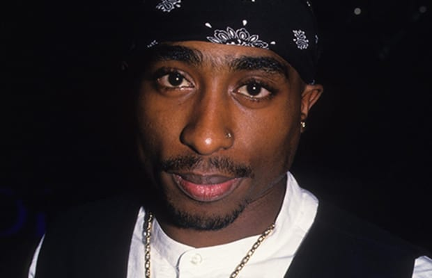

Despre
Și-a început cariera de rapper în anul 1990 când a înregistrat prima sa melodie cu ajutorul grupului vocal „Digital Underground”. Mai târziu a fost lansat primul său album și anume „2Pacalypse Now” care i-a adus foarte multe critici din cauza limbajului agresiv.
În 1993, Tupac formează grupul „Thug Life” împreună cu câțiva prieteni de ai săi: Big Syke, Macadoshis, fratele său vitreg Mopreme Shakur și Rated R. Grupul a lansat primul și ultimul lor album Thug Life Vol. 1 pe 26 septembrie 1994. Conceptul „Thug Life” în viziunea lui Tupac era o filozofie pentru viață. A dezvoltat cuvântul în The Hate U Give Little Infants Fucks Everybody. El a definit cuvântul thug nu ca un criminal, ci ca un om care este stabil, care își știe puterile, care își face viața lui și este mândru de realizările sale.
În noaptea de 30 noiembrie 1994, cu o zi înainte de judecarea sa din cauza unui presupus atac sexual, Shakur a fost împușcat de cinci ori și a fost jefuit după ce a intrat în camera din Quad Record Studios din Manhattan, New York, de către doi oameni de culoare înarmați, care purtau cagule. Mai târziu Tupac i-a acuzat pe Puff Daddy (P Diddy), Andre Harrell și Biggie Smalls, pe care i-a crezut responsabili de această faptă deoarece considera ca atentatul a fost o consecință a faptului ca el refuzase sa semneze un contract cu Bad Boy, contract pe care Andre Harrell i-l propuse. După spusele doctorilor, Tupac a avut două gloanțe în cap, două gloanțe în vintre și unul în braț. El l-a mai acuzat și pe asociatul său Randy Walker. A ieșit din spital la trei ore după operație, împotriva ordinelor doctorilor, ducându-se la tribunal într-un scaun cu rotile, unde a fost găsit vinovat și a fost închis la penitenciarul din New York.
Tupac a intrat în penitenciar pe 14 februarie 1995, la Clinton Correctional Facility. La scurt timp după asta a lansat albumul multi-platină „Me Against The World”. Tupac este singurul artist care a avut un album pe primul loc în Bilboard 200 în timp ce era în închisoare. Albumul a debutat cu numărul 1 în Bilboard 200 și a rămas acolo timp de cinci săptămâni. Albumul a fost vândut în 240.000 de exemplare în prima săptămână, Tupac fiind primul rapper care a atins această performanță. S-a căsătorit cu prietena sa, Keisha Morris, dar căsătoria a fost anulată. În închisoare, Tupac a citit multe cărți de Niccolo Machiavelli, Sun Tzu-Arta Războiului și alte lucrări despre filozofia politică și strategică. A scris și un scenariu numit Live 2 Tell, o poveste despre un adolescent care devine un mare traficant de droguri. În octombrie 1995, cazul lui Tupac era analizat, dar datorită cheltuielilor de judecată nu a putut strânge suma de 1.4 milioane de dolari. După ce a servit 11 luni de închisoare, Shakur a fost eliberat datorită lui Marion ,,Suge" Knight, care a plătit suma cu condiția ca Tupac să semneze cu Death Row.
În noaptea de 7 septembrie 1996, Tupac a fost prezent la meciul de box dintre Mike Tyson și Bruce Seldon ce a avut loc la MGM Grand în Las Vegas. După acel meci, unul dintre asociații lui Suge Knight l-a văzut pe Orlando „Baby Lane” Anderson în holul MGM Grand și l-a anunțat pe Tupac de prezența acestuia, Tupac atacându-l. Cei care erau cu Tupac l-au lovit și ei de asemenea pe Orlando Anderson. Bătaia a fost înregistrată pe sistemul de supraveghere al hotelului.
Cu câteva săptămâni înainte, Anderson și câțiva membrii din Crips l-au jefuit pe unul dintre membrii casei de discuri Death Row într-un magazin de încălțăminte, precipitând atacul lui Tupac. După confruntarea sa cu Anderson, Tupac s-a urcat în mașina lui Suge Knight, o limuzină neagră (BMW 750i), împreună cu membrii grupului „The Outlawz” și gărzile de corp pentru a merge către clubul deținut de Death Row, Clubul 662. La 10:55 pm, mașina a oprit la un semafor timp în care Tupac a fost fotografiat. Knight. Au fost lasati sa plece fara a fi amendați câteva minute mai târziu . În jurul orei 23:15, a apărut un Cadillac alb din care s-a tras în mașină lui Suge Knight, gloanțele nimerindu-l atât pe Suge Knight, cât și pe Tupac, cel din urmă fiind grav rănit. După împușcături, Tupac a fost dus la Centrul Medical Universitar din Las Vegas, unde a fost tratat timp de șase zile, dar a murit din cauza problemelor pulmonare. Pe 13 septembrie 1996, la 04:03 am, Tupac Shakur a fost declarat mort. După acestea, corpul lui Tupac a fost incinerat, iar cenușa sa a fost împrăștiată în Oceanul Pacific, o parte din cenușă fiind amestecată cu marijuana de membrii grupului „The Outlawz”. Familia și prietenii au împărțit resturile rămase într-o ceremonie ce a avut loc în Soweto, Africa de Sud. Ceremonia a fost întârziată de la 13 septembrie 1996 la 16 iunie 1997, care ar fi fost a 26-a zi de naștere a lui Tupac.
